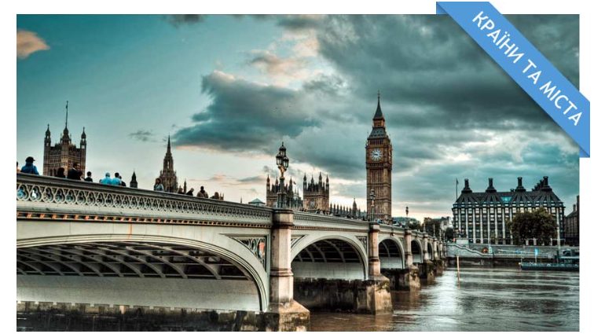
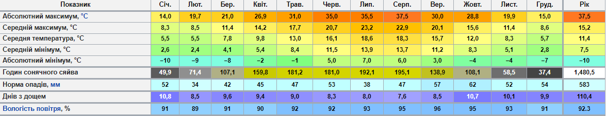
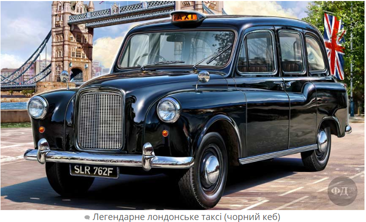

Зміст:
Content:
Roboto ↓
Історія Лондона
History of London

Лондон — столиця Англії та Великої Британії, розташована на річці Темза. Одне з найбільших міст Європи. Площа 1572 км²; у 2017 році населення становило 8,8 млн осіб, а з передмістями близько 10 млн.
Середмістя Лондона є фінансовим і комерційним центром Сполученого Королівства Великої Британії та Північної Ірландії. Великий Лондон із 1965 року складається з 32-х округів. Важливе джерело доходу — туризм. Найбільш відвідуваними місцями є: Лондонський Тауер, Собор Святого Павла, Букінгемський палац, Вестмінстерське абатство. Лондонський університет є найбільшим у країні. Фахові корпорації юристів Судові інни існують із XIII століття. Лондон — центр англійської театральної діяльності від часу побудови першого театру Джеймсом Бербеджем 1576 року.
Місто є найбільшим чи одним із двох найбільших (нарівні з Нью-Йорком) фінансових центрів і бізнес-хабів у світі. Також, за версією консалтингової компанії A.T.Kearney, Лондон є найвпливовішим містом у світі.
Походження назви
Сучасна назва міста — Лондон — походить від давнішого римського «Лондініум» (лат. Londinium). Єдиної думки щодо походження цього слова немає, але вчені неодноразово висували гіпотези про етимологію назви. Ось чотири найпопулярніші припущення:
- Лондон — слово латинського походження, утворене від римського власного імені, яке означає «шалений»;
- Лондон — слово латинського походження і походить від слова Lond, що означає «Дике (тобто тут заросле лісом) місце»
- Лондон — слово кельтського походження і складається з двох слів: Llyn (озеро) і Dun (укріплення): у кельтський період місто називалося Llyndid;
- Слово Лондон походить від давньоєвропейського слова Plowonida, що означає «Річка, що вийшла з берегів».
Неофіційні назви Лондона
Англійці часто називають Лондон The Big Smoke. Цю назву можна перекласти як «Великий дим». Зрозуміло, що ця назва пов'язана із лондонським смогом. Інша неофіційна назва міста — The Great Wen. Цей вираз майже неможливо перекласти дослівно, через те, що в українській мові немає тотожності слову Wen, що приблизно означає «Місто із занадто великим населенням».
Щодо назв районів, то Сіті інколи називають «квадратною милею». У часи Британської Імперії Лондон часто неофіційно називали столицею світу, а у 1960-і роки місто отримало назву «Свінгуючий Лондон» — за квітучим життям моди та культури.
Розташування
Лондон займає площу 1579 км². Координати: 51°30′ пн. ш. 0°00′ зх. д.
Із південного заходу до сходу місто перетинає Темза, судноплавна річка, що впадає в Північне море. Долина Темзи — родюча і доволі плоска, що дозволило Лондона розширюватися рівномірно. Спочатку річка була ширшою, а береги її були болотистими і топкими, але завдяки діяльності людини все це зникло. Темза — припливно-відпливна річка, і тому в Лондоні є небезпека повені[12]. Останніми роками ця небезпека збільшилася через підняття рівня води в річці.
Клімат
За класифікацією Кеппена клімат Лондона помірний морський, тож у місті рідкісні випадки дуже високої чи дуже низької температури. Влітку температура здебільшого змінюється в межах від 11 °C до 24 °C, хоча в окремі дні може досягати 30 °C. Рекордна температура 39 °C була зафіксована 10 серпня 2003 року. Зими в Лондоні прохолодні, але температура рідко падає до нуля. Рекордно низька температура становить −10 °C.
Лондон відносно сухе місто з регулярними, але несильними опадами впродовж всього року.
Lato ↓
Цікаві факти про Лондон (Interesting facts about London)
Столиця Англії та Великої Британії — Лондон одне з найкрасивіших міст світу. Найбільше місто Європи та
шістнадцяте за
розміром у світі воно має чим здивувати численних туристів. Ми підібрали для вас найцікавіші факти про це
дивовижне
місто.
The capital of England and Great Britain — London is one of the most beautiful cities in the
world. The largest city in
Europe and the sixteenth largest in the world, it has something to surprise many tourists. We have selected
for you the
most interesting facts about this amazing city.
- У світі є багато міст які мають таку ж назву, свій Лондон є на території Канади, в США, та інших країнах. Незвичним є факт, що канадський Лондон також розміщений на річці, яка називається Темза.
-
Як не дивно, дуже престижною професією тут є робота в таксі. Далеко не всі можуть скласти іспит і стати
таксистом в
Лондоні, оскільки всі лондонські таксисти зобов'язані ідеально знати мапу міста та розташування всіх без
виключення
вулиць. Це одна з причин того, що таксі у Лондоні найдорожче в світі.
 - Всупереч репутації як дощового місто, в Лондоні менше опадів ніж в Римі, Неаполі чи навіть австралійському Сіднеї, проте якщо тут починається дощ, то він затягується на декілька днів.
- Згідно дослідження 2016 року, Лондон на шостому місці серед найдорожчих для проживання міст у всьому світі.
- Сьогодні швидкість руху в центрі Лондона обмежується приблизно до швидкості карет, які рухались містом понад століття тому.
- Лондонське метро відоме у всьому світі, і англійською називається «Underground» (дослівно перекладається як під землею), проте попри свою назву, більш ніж половина підземної мережі насправді працює над землею. Цікавим також є факт, що в лондонському метро живе близько півмільйона мишей.
-
Одним із символів Лондона є найбільш впізнаваний автобус у світі — двоповерховий Роутмастер (англ.
Routemaster — Володар
доріг).

- Будинок Парламенту в Лондоні або Вестмінстерський палац налічує більш як сто кімнат, а всі коридори разом узяті, протяжністю понад п'ять кілометрів.
- Якщо б лондонський Біг Бен вирішили збудувати в 2016 році, на побудову довелося б викласти близько 222000 доларів.
- 17 жовтня 1814 році Лондон був затоплений пивом (майже півтора мільйона літрів), це трапилось в результаті розриву величезного чану з хмільним напоєм. Цей день в історії Лондона має назву «London Beer Flood» що перекладається як пивна повінь.